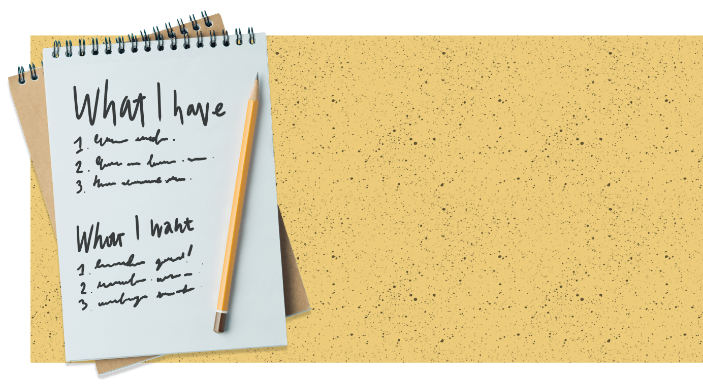
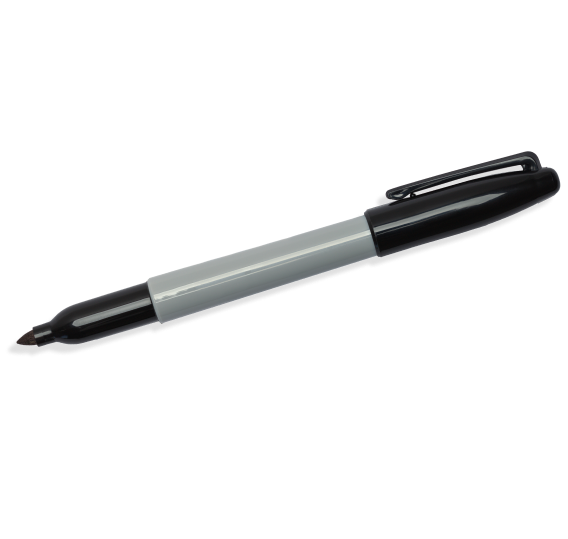

Developing future leaders.


Our Mission
Openground's purpose is twofold. As a business incubator, we want to build sustainable businesses that can empower student’s success for years to come. We also realise that not every business will succeed. For all students, we are dedicated to provide them with a supportive environment that nurtures their entrepreneurial skills, encourages their personal growth, and equips them with the confidence and knowledge needed to pursue their entrepreneurial endeavours.
History
The concept of Openground had been discussed for many years by Bill Smale, QSM. Bill is someone that has been involved in many high school business programmes - he even got a QSM for it! He wanted to establish a programme that could go beyond the theory and help students set up real, established businesses.
In partnership with the Westlake Foundation, Openground officially launched in 2022 and has since become the birthplace and catalyst for many successful young entrepreneurs.
Following its success, the programme is now expanding to more schools across New Zealand, both as an in-school and extra-curricular opportunity. In 2025, the Openground Foundation of New Zealand was established to continue the growth of this fantastic initiative, ensuring it can reach more students nationwide and empower the next generation of innovators and leaders.
Team

-fotor-20230625192929.png)
I think I learned too many skills to list down, but to keep it short I think the one skill I developed the most is my entrepreneurial mindset. I've really shifted my thinking about how to tackle start-ups in the future and what you need as a founder/CEO to make it happen.